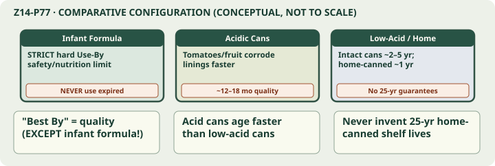

Z14-P77 · Food production and preservation · New manuscript
Distinguish commercial "Best By" quality dates from actual food-safety limits
Avoid both unnecessary waste of intact shelf-stable staples AND dangerous fabricated 25-year shelf-life claims.
When it applies · Managing household pantry rotation, commercial food dates, and home-preserved inventory planning.
Equipment · Printed pantry inventory sheet and USDA/Ready.gov date-label guide.

Actions
- Understand U.S. commercial food-date labels accurately: "Best if Used By" and "Sell By" on intact, properly stored shelf-stable cans/boxes reflect peak manufacturer flavor and texture QUALITY—NOT an automatic safety cutoff—with the critical mandatory exception of INFANT FORMULA, which MUST NEVER be used past its printed "Use By" date (nutrient degradation and safety risk).[P15]
- Reject exaggerated marketing or internet claims promising universal 20-to-30-year safe shelf lives for home-canned jars, ordinary grocery cans, or uncontrolled warm pantries—acidic canned foods (tomatoes, pineapple, pickles) corrode can linings faster (~12–18 months quality) while low-acid intact commercial cans hold longer (~2–5 years quality) in cool dry storage.[P15, P18]
- Combine intact physical package inspection + cool dry 50–70°F storage + active FIFO grocery rotation so household reserves stay both safe AND deliciously nutritious.[P15, P18]
Failure recognition · Feeding expired infant formula during an outage OR hoarding home-canned tomatoes for ten years in a hot closet assuming "sealed means immortal."[P15, P18]
Verify · Confirm infant formula strictly within Use-By date, acidic vs low-acid commercial quality windows respected, and active FIFO rotation running.[P15, P18]
Stop or change course · Expired infant formula, compromised cans, rancid fats, or unsealed home jars are NEVER safe regardless of date labels.[P15, P10]
Evidence and editorial notes
- P10 · NCHFP · Identifying and Handling Spoiled Canned Food (current web edition)
- Section: Identifying and Handling Spoiled Canned Food > Botulism Detoxification · Conditions: Suspected unsealed, bulging, spurting, foamy, moldy, or improperly processed home-canned jars
Support: Never taste suspect home-canned food—botulinum toxin is odorless and tasteless; check every seal before opening, discard unsealed jars promptly after processing (or refrigerate/reprocess within 24 hours per NCHFP rules), and follow official NCHFP detoxification/disposal steps for suspect low-acid jars.
Limitations: Simple visual clarity or normal smell never proves an untested low-acid jar is free of botulinum toxin. · Conflicting evidence: None; mandatory high-consequence food-safety stop condition.
Editorial note: Anchors spoilage inspection and safe disposal in Z14. · Specialist reviewer: Food microbiology and public health
Primary source · checked 2026-11-24 - P15 · FEMA / Ready.gov · Emergency Food Supply (current web edition)
- Section: Emergency Food Inventory > Non-Perishable Rotation, Dietary Needs, and Tools · Conditions: Household multi-day to 30-day emergency pantry planning
Support: Build a rotated pantry of familiar shelf-stable foods requiring minimal water and no refrigeration (canned proteins/vegetables, dry grains/legumes, nut butters, infant/medical/pet diets), keep a manual can opener, and mark purchase/rotation dates clearly (FIFO).
Limitations: Do not invent unverified multi-decade shelf lives; commercial "Best By" dates reflect quality while damaged, rusted, or dented-seam cans pose safety hazards. · Conflicting evidence: None; aligns with FSG-4 and NCHFP storage hygiene.
Editorial note: Grounds household food inventory, FIFO rotation, and can-integrity screening. · Specialist reviewer: Household preparedness and food safety
Primary source · checked 2026-11-24 - P18 · University of Minnesota Extension · Harvesting and Storing Home Garden Vegetables (current web edition)
- Section: Dry Grain, Legume, and Pantry Pest/Moisture Protection · Conditions: Cool dry household pantries storing dry beans, grains, flour, and dehydrated produce
Support: Store dry staples and dehydrated foods in cool (ideally 50–70°F), dark, dry locations inside airtight food-grade containers to prevent moisture absorption, rancidity, rodents, and pantry insects; inspect periodically for clumping, webbing, or off-odors.
Limitations: Heat, humidity, and light degrade nutrients and accelerate fat rancidity in whole grains and nuts far faster than refined staples. · Conflicting evidence: None; avoids fabricated 25-year shelf-life promises.
Editorial note: Grounds dry-goods storage, pest exclusion, and spoilage inspection. · Specialist reviewer: Food storage and Extension specialist
Primary source · checked 2026-11-24
Source lineage · FEMA Ready.gov Food and USDA FoodSafety.gov; new manuscript · Classification · New manuscript.